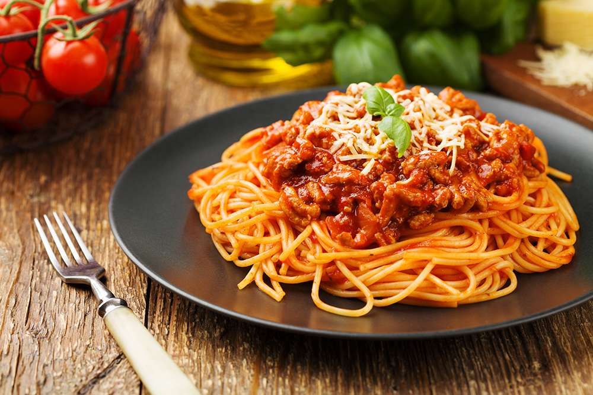

Bolognese

Bolognese sauce, originating from Bologna, Italy, gained popularity in the 20th century. Traditionally made with onions, carrots, celery, and a mix of beef and pork, simmered in a tomato-based sauce, its recipe solidified with Pellegrino Artusi's cookbook in 1891. Variations abound, allowing for personal touches while preserving its rich, savory essence. Enjoyed over pasta or in lasagna, it remains a beloved classic.
Ingredients
Filling
- 1 tbsp olive oil
- 4 rashers smoked streaky bacon, finely chopped
- 2 medium onions, finely chopped
- 2 carrots, trimmed and finely chopped
- 2 celery sticks, finely chopped
- 2 garlic cloves finely chopped
- 2-3 sprigs rosemary leaves picked and finely chopped
- 500g beef mince
- 75g Parmesan, grated, plus extra to serve
- 400g spaghetti
Sauce
- 2 x 400g tins plum tomatoes
- Small pack basil leaves picked, ¾ finely chopped
- 1 tsp dried oregano
- 2 fresh bay leaves
- 2 tbsp tomato purée
- 1 beef stock cube
- 1 red chilli deseeded and finely chopped (optional)
- 125ml red wine
- 6 cherry tomatoes sliced in half
Method
- Put a large saucepan on a medium heat and add 1 tbsp olive oil.
- Add 4 finely chopped bacon rashers and fry for 10 mins until golden and crisp.
- Reduce the heat and add the onions, carrots, celery sticks, garlic cloves and the rosemary, all finely chopped.
- Fry for 10 mins. Stir the veg often until it softens.
- Increase the heat to medium-high, add 500g beef mince and cook stirring for 3-4 mins until the meat is browned all over.
- Add 2 tins plum tomatoes, the finely chopped leaves from ¾ small pack basil, 1 tsp dried oregano, 2 bay leaves, 2 tbsp tomato purée, 1 beef stock cube, 1 deseeded and finely chopped red chilli (if using), 125ml red wine and 6 halved cherry tomatoes. Stir with a wooden spoon, breaking up the plum tomatoes.
- Bring to the boil, reduce to a gentle simmer and cover with a lid. Cook for 1 hr 15 mins stirring occasionally, until you have a rich, thick sauce.
- Add the 75g grated Parmesan, check the seasoning and stir.
- When the Bolognese is nearly finished, cook 400g spaghetti following the pack instructions.
- Drain the spaghetti and either stir into the Bolognese sauce, or serve the sauce on top. Serve with more grated Parmesan.